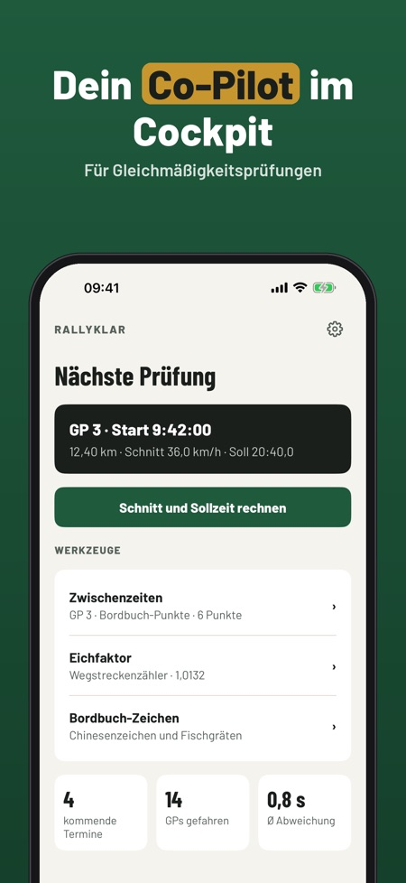
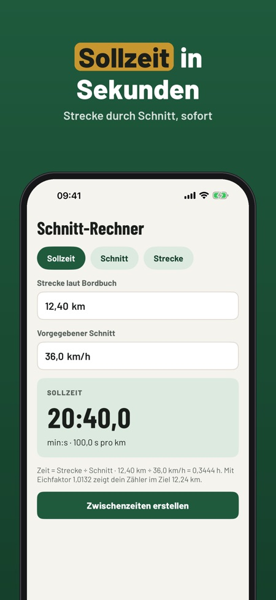
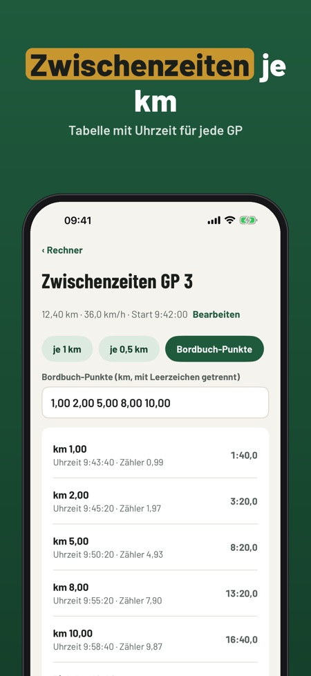

Rallyklar ist der Rechner und das Notizbuch für Beifahrer bei Oldtimer-Rallyes mit Gleichmäßigkeitsprüfungen. Alle Werte aus Bordbuch und Wegstreckenzähler gibst du selbst ein.



Für Beifahrer bei Oldtimer-Rallyes mit Gleichmäßigkeitsprüfungen, als Rechen- und Notizwerkzeug.
Nein, die App funktioniert ohne Internet und ohne GPS.
Schnitt-Rechner, Korrekturfaktor und ein Termin sind ohne Kauf nutzbar.
Nein. Die Vollversion ist ein Einmalkauf und schaltet Zwischenzeiten, Stoppuhr, unbegrenzte Termine und Ergebnisse frei.
Chinesenzeichen, Fischgräten und ZK.
Nein, es gilt immer die Ausschreibung des Veranstalters. Die App ist nicht mit ADAC, ÖAMTC oder Veranstaltern verbunden.
Rallyklar ist der Rechner und das Notizbuch für Beifahrer bei Oldtimer-Rallyes mit Gleichmäßigkeitsprüfungen: alle Werte aus Bordbuch und Wegstreckenzähler gibst du selbst ein.
Schnitt-Rechner, Korrekturfaktor und ein Termin sind ohne Kauf nutzbar. Die Vollversion ist ein Einmalkauf und schaltet Zwischenzeiten, Stoppuhr, unbegrenzte Termine und Ergebnisse frei. Kein Abo.
Rallyklar ist ein Rechen- und Notizwerkzeug. Es gilt immer die Ausschreibung des Veranstalters. Nicht verbunden mit ADAC, ÖAMTC oder Veranstaltern.